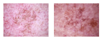
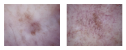
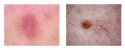
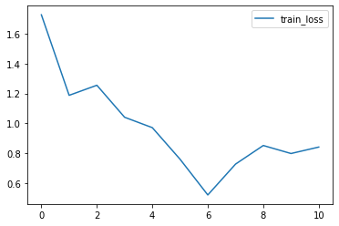
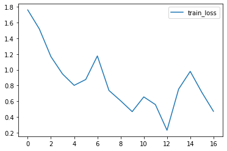
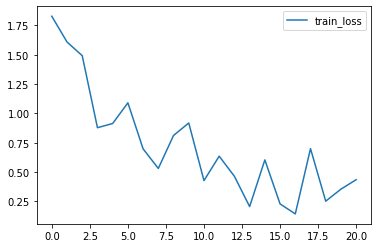

Skin lesion¶
前準備¶
主要パッケージを読み込む¶
loggerの設定も行う
[1]:
import pathlib
import matplotlib.pyplot as plt
import numpy as np
import pandas as pd
from tqdm.auto import tqdm
from IPython.display import display
from logging import basicConfig, getLogger, INFO
basicConfig(level=INFO, format='%(asctime)s %(levelname)s :%(message)s')
logger = getLogger(__name__)
データディレクトリの指定¶
[2]:
DATA_ROOT = pathlib.Path('Data/Images/skin_lesion')
CLASS_LABELS = ('akiec', 'bcc', 'bkl', 'df', 'mel', 'nv', 'vasc')
IMAGE_EXT = '.jpg'
画像ファイルを基にpd.DataFrameを作成する¶
[3]:
import tut_utils
df_dataset = tut_utils.create_dataset_df(DATA_ROOT, CLASS_LABELS, IMAGE_EXT)
assert set(CLASS_LABELS) == set(df_dataset['class_label'].unique(
)), 'Discrepancy between CLASS_LABELS and df_dataset'
display(df_dataset)
| filepath | class_label | class | |
|---|---|---|---|
| 0 | Data\Images\skin_lesion\akiec\ISIC_0024329.jpg | akiec | 0 |
| 1 | Data\Images\skin_lesion\akiec\ISIC_0024450.jpg | akiec | 0 |
| 2 | Data\Images\skin_lesion\akiec\ISIC_0024511.jpg | akiec | 0 |
| 3 | Data\Images\skin_lesion\akiec\ISIC_0024522.jpg | akiec | 0 |
| 4 | Data\Images\skin_lesion\akiec\ISIC_0024913.jpg | akiec | 0 |
| ... | ... | ... | ... |
| 247 | Data\Images\skin_lesion\vasc\ISIC_0032076.jpg | vasc | 6 |
| 248 | Data\Images\skin_lesion\vasc\ISIC_0032745.jpg | vasc | 6 |
| 249 | Data\Images\skin_lesion\vasc\ISIC_0032839.jpg | vasc | 6 |
| 250 | Data\Images\skin_lesion\vasc\ISIC_0033135.jpg | vasc | 6 |
| 251 | Data\Images\skin_lesion\vasc\ISIC_0033158.jpg | vasc | 6 |
252 rows × 3 columns
クラスごとの画像数を確認する¶
[4]:
df_dataset['class_label'].value_counts()
[4]:
bkl 36
nv 36
vasc 36
akiec 36
mel 36
bcc 36
df 36
Name: class_label, dtype: int64
各クラスの画像を表示してみる¶
[5]:
tut_utils.show_images_each_class(df_dataset,
n_rows=1,
n_cols=2,
figsize=(3, 2))
akiec

bcc
bkl

df

mel

nv

vasc

画像読み込み用の関数を作成¶
[6]:
IMG_SHAPE = (3, 224, 224)
from PIL import Image
import torch
def load_img(filepath):
img = Image.open(filepath)
img = img.resize(IMG_SHAPE[1:])
return np.atleast_3d(img)
Data augmentation¶
試しに適用¶
いくつかの画像に対して実際にaugmentationを適用し表示する
[7]:
import albumentations as A
from tut_utils import AugmentedDataset, load_dataset
album_transform = A.Compose([
A.RandomBrightnessContrast(brightness_limit=.1, contrast_limit=.1, p=.5),
A.Flip(p=.5),
A.ShiftScaleRotate(shift_limit=0.1, scale_limit=.2, rotate_limit=45, p=.8)
])
N_TEST = 3
def random_transform(x, y):
x = (x / 255).astype(np.float32)
tfed = album_transform(image=x)
x = tfed['image']
x = x.transpose(2, 0, 1) # to channels first
return x.astype(np.float32), y
def base_transform(x, y):
x = (x / 255).astype(np.float32)
x = x.transpose(2, 0, 1) # to channels first
return x, y
def test_augmentation(df_dataset):
df_train = df_dataset.iloc[:N_TEST]
train_data, train_labels = load_dataset(df_train, load_img)
dataset = AugmentedDataset(train_data, train_labels, random_transform)
loader = torch.utils.data.DataLoader(dataset,
batch_size=1,
shuffle=False,
num_workers=0)
for i, data in enumerate(loader):
plt.figure(figsize=(4, 1.5))
plt.subplot(1, 2, 1)
plt.imshow(train_data[i], cmap='gray')
plt.title('pre-augmentation')
plt.axis('off')
plt.subplot(1, 2, 2)
plt.imshow(data[0].squeeze().numpy().transpose(1, 2, 0), cmap='gray')
plt.title('post-augmentation')
plt.axis('off')
plt.show()
test_augmentation(df_dataset)

モデル作成¶
ImageNetで事前学習されたMobileNetV2を基にモデルを作成する。 参考
注意: BatchNormalizationレイヤーのmomentumは手動で再設定する
[8]:
import torch
import torch.nn as nn
import torch.nn.functional as F
import torchvision.models as models
from torchvision.models.utils import load_state_dict_from_url
class MobileNetFeatures(models.MobileNetV2):
def __init__(
self,
pretrained=True,
**kwargs,
):
super().__init__(**kwargs)
if pretrained:
state_dict = load_state_dict_from_url(
models.mobilenet.model_urls['mobilenet_v2'])
self.load_state_dict(state_dict)
def forward(self, x):
return self.features(x)
class MobileNet(nn.Module):
def __init__(self):
super().__init__()
self.feature_extractor = MobileNetFeatures()
self.conv = nn.Sequential(nn.Conv2d(1280, 128, kernel_size=3),
nn.BatchNorm2d(128), nn.ReLU(inplace=True),
nn.Conv2d(128, 32, kernel_size=3),
nn.BatchNorm2d(32), nn.ReLU(inplace=True))
self.classifier = nn.Sequential(nn.Flatten(),
nn.Linear(288, len(CLASS_LABELS)))
def forward(self, x):
x = self.feature_extractor(x)
x = self.conv(x)
x = self.classifier(x)
return x
from torchsummary import summary
summary(MobileNet(), IMG_SHAPE, verbose=0, device='cpu')
[8]:
==========================================================================================
Layer (type:depth-idx) Output Shape Param #
==========================================================================================
├─MobileNetFeatures: 1-1 [-1, 1280, 7, 7] --
| └─Sequential: 2-1 [-1, 1280, 7, 7] --
| | └─ConvBNReLU: 3-1 [-1, 32, 112, 112] 928
| | └─InvertedResidual: 3-2 [-1, 16, 112, 112] 896
| | └─InvertedResidual: 3-3 [-1, 24, 56, 56] 5,136
| | └─InvertedResidual: 3-4 [-1, 24, 56, 56] 8,832
| | └─InvertedResidual: 3-5 [-1, 32, 28, 28] 10,000
| | └─InvertedResidual: 3-6 [-1, 32, 28, 28] 14,848
| | └─InvertedResidual: 3-7 [-1, 32, 28, 28] 14,848
| | └─InvertedResidual: 3-8 [-1, 64, 14, 14] 21,056
| | └─InvertedResidual: 3-9 [-1, 64, 14, 14] 54,272
| | └─InvertedResidual: 3-10 [-1, 64, 14, 14] 54,272
| | └─InvertedResidual: 3-11 [-1, 64, 14, 14] 54,272
| | └─InvertedResidual: 3-12 [-1, 96, 14, 14] 66,624
| | └─InvertedResidual: 3-13 [-1, 96, 14, 14] 118,272
| | └─InvertedResidual: 3-14 [-1, 96, 14, 14] 118,272
| | └─InvertedResidual: 3-15 [-1, 160, 7, 7] 155,264
| | └─InvertedResidual: 3-16 [-1, 160, 7, 7] 320,000
| | └─InvertedResidual: 3-17 [-1, 160, 7, 7] 320,000
| | └─InvertedResidual: 3-18 [-1, 320, 7, 7] 473,920
| | └─ConvBNReLU: 3-19 [-1, 1280, 7, 7] 412,160
├─Sequential: 1-2 [-1, 32, 3, 3] --
| └─Conv2d: 2-2 [-1, 128, 5, 5] 1,474,688
| └─BatchNorm2d: 2-3 [-1, 128, 5, 5] 256
| └─ReLU: 2-4 [-1, 128, 5, 5] --
| └─Conv2d: 2-5 [-1, 32, 3, 3] 36,896
| └─BatchNorm2d: 2-6 [-1, 32, 3, 3] 64
| └─ReLU: 2-7 [-1, 32, 3, 3] --
├─Sequential: 1-3 [-1, 7] --
| └─Flatten: 2-8 [-1, 288] --
| └─Linear: 2-9 [-1, 7] 2,023
==========================================================================================
Total params: 3,737,799
Trainable params: 3,737,799
Non-trainable params: 0
Total mult-adds (M): 79.32
==========================================================================================
Input size (MB): 0.57
Forward/backward pass size (MB): 7.14
Params size (MB): 14.26
Estimated Total Size (MB): 21.97
==========================================================================================
pytorch-lightning¶
pytorch-lightningを用いて学習を行う。 pytorch-lightningを用いることでtrain等の定型的な関数を自作する必要がなくなる。
[9]:
import torch.optim as optim
import pytorch_lightning as pl
class LitNet(pl.LightningModule):
def __init__(self):
super().__init__()
self.model = MobileNet()
self.criterion = nn.CrossEntropyLoss()
def forward(self, x):
return self.model(x)
def training_step(self, batch, batch_idx):
x, y = batch
y_hat = self.model(x)
loss = self.criterion(y_hat, y)
self.log('train_loss', loss)
return loss
def configure_optimizers(self):
optimizer = optim.Adam(self.parameters(), lr=1e-4)
return optimizer
K-Fold 交差検証¶
lossの値を早期終了の基準として使用する。
注意: 今回、trainingデータを用いて学習を終了させていますが、本来はvalidationデータ(trainingでもtestでもないデータ)を用います。
[10]:
import os
from sklearn.model_selection import StratifiedKFold
from pytorch_lightning.callbacks import EarlyStopping
from pytorch_lightning.loggers import CSVLogger
K_FOLD = 3
kfold = StratifiedKFold(n_splits=K_FOLD, shuffle=True)
DEBUG = False
BATCH_SIZE = 8
NUM_WORKERS = 0 if os.name == 'nt' else 2
EPOCHS = 2 if DEBUG else 64
PATIENCE = 4
def predict_multiclass(model, loader, index):
model.freeze()
model.eval()
ys = []
with torch.no_grad():
for batch in loader:
x, _ = batch
logits = model(x)
ys.append(logits)
logits = torch.cat(ys, axis=0)
preds = F.softmax(logits, dim=1)
preds = preds.cpu().numpy()
df_result = pd.DataFrame({
'pred_logits': list(logits.cpu().numpy()),
'pred_proba': list(preds),
'pred_class': np.argmax(preds, axis=1)
})
df_result.index = index
return df_result
results = []
for i_iter, (train_index, test_index) in enumerate(
kfold.split(df_dataset['filepath'], df_dataset['class'])):
logger.info('{i}th iteration of {k}-fold CV'.format(i=i_iter + 1,
k=K_FOLD))
df_train = df_dataset.iloc[train_index]
df_test = df_dataset.iloc[test_index]
train_data, train_labels = load_dataset(df_train, load_img)
test_data, test_labels = load_dataset(df_test, load_img)
model = LitNet()
dataset = AugmentedDataset(train_data, train_labels, random_transform)
trainloader = torch.utils.data.DataLoader(dataset,
batch_size=BATCH_SIZE,
shuffle=True,
num_workers=NUM_WORKERS)
early_stop_callback = EarlyStopping(monitor='train_loss',
patience=PATIENCE,
verbose=True,
mode='min')
csv_logger = CSVLogger('train_logs', name='skin_lesion')
trainer = pl.Trainer(gpus=1 if torch.cuda.is_available() else 0,
max_epochs=EPOCHS,
logger=csv_logger,
log_every_n_steps=len(trainloader),
callbacks=[early_stop_callback])
trainer.fit(model, trainloader)
logger.info('Finish training')
df_logs = pd.read_csv(csv_logger.experiment.metrics_file_path)
df_logs.plot(y='train_loss')
plt.show()
dataset = AugmentedDataset(test_data, test_labels, base_transform)
testloader = torch.utils.data.DataLoader(dataset,
batch_size=BATCH_SIZE,
shuffle=False,
num_workers=NUM_WORKERS)
df_result = predict_multiclass(model, testloader, test_index)
results.append(df_result)
# break
2021-03-31 14:23:30,345 INFO :1th iteration of 3-fold CV
GPU available: True, used: True
2021-03-31 14:23:30,974 INFO :GPU available: True, used: True
TPU available: None, using: 0 TPU cores
2021-03-31 14:23:30,975 INFO :TPU available: None, using: 0 TPU cores
LOCAL_RANK: 0 - CUDA_VISIBLE_DEVICES: [0]
2021-03-31 14:23:30,977 INFO :LOCAL_RANK: 0 - CUDA_VISIBLE_DEVICES: [0]
| Name | Type | Params
-----------------------------------------------
0 | model | MobileNet | 5.0 M
1 | criterion | CrossEntropyLoss | 0
-----------------------------------------------
5.0 M Trainable params
0 Non-trainable params
5.0 M Total params
2021-03-31 14:23:32,130 INFO :
| Name | Type | Params
-----------------------------------------------
0 | model | MobileNet | 5.0 M
1 | criterion | CrossEntropyLoss | 0
-----------------------------------------------
5.0 M Trainable params
0 Non-trainable params
5.0 M Total params
2021-03-31 14:23:51,784 INFO :Finish training

2021-03-31 14:23:55,399 INFO :2th iteration of 3-fold CV
GPU available: True, used: True
2021-03-31 14:23:56,058 INFO :GPU available: True, used: True
TPU available: None, using: 0 TPU cores
2021-03-31 14:23:56,060 INFO :TPU available: None, using: 0 TPU cores
LOCAL_RANK: 0 - CUDA_VISIBLE_DEVICES: [0]
2021-03-31 14:23:56,061 INFO :LOCAL_RANK: 0 - CUDA_VISIBLE_DEVICES: [0]
| Name | Type | Params
-----------------------------------------------
0 | model | MobileNet | 5.0 M
1 | criterion | CrossEntropyLoss | 0
-----------------------------------------------
5.0 M Trainable params
0 Non-trainable params
5.0 M Total params
2021-03-31 14:23:56,098 INFO :
| Name | Type | Params
-----------------------------------------------
0 | model | MobileNet | 5.0 M
1 | criterion | CrossEntropyLoss | 0
-----------------------------------------------
5.0 M Trainable params
0 Non-trainable params
5.0 M Total params
2021-03-31 14:24:25,711 INFO :Finish training

2021-03-31 14:24:29,519 INFO :3th iteration of 3-fold CV
GPU available: True, used: True
2021-03-31 14:24:30,179 INFO :GPU available: True, used: True
TPU available: None, using: 0 TPU cores
2021-03-31 14:24:30,180 INFO :TPU available: None, using: 0 TPU cores
LOCAL_RANK: 0 - CUDA_VISIBLE_DEVICES: [0]
2021-03-31 14:24:30,182 INFO :LOCAL_RANK: 0 - CUDA_VISIBLE_DEVICES: [0]
| Name | Type | Params
-----------------------------------------------
0 | model | MobileNet | 5.0 M
1 | criterion | CrossEntropyLoss | 0
-----------------------------------------------
5.0 M Trainable params
0 Non-trainable params
5.0 M Total params
2021-03-31 14:24:30,212 INFO :
| Name | Type | Params
-----------------------------------------------
0 | model | MobileNet | 5.0 M
1 | criterion | CrossEntropyLoss | 0
-----------------------------------------------
5.0 M Trainable params
0 Non-trainable params
5.0 M Total params
2021-03-31 14:25:06,050 INFO :Finish training

テスト結果¶
[11]:
df_result = pd.concat(results, axis=0)
df_result = df_dataset.join(df_result)
display(df_result)
| filepath | class_label | class | pred_logits | pred_proba | pred_class | |
|---|---|---|---|---|---|---|
| 0 | Data\Images\skin_lesion\akiec\ISIC_0024329.jpg | akiec | 0 | [1.2920845, 1.0699552, -0.38711792, -0.4194856... | [0.42640528, 0.34147042, 0.07953427, 0.0770011... | 0 |
| 1 | Data\Images\skin_lesion\akiec\ISIC_0024450.jpg | akiec | 0 | [0.86791, 0.94399536, -0.7762477, -0.9198698, ... | [0.2666558, 0.28773618, 0.05151129, 0.04461985... | 1 |
| 2 | Data\Images\skin_lesion\akiec\ISIC_0024511.jpg | akiec | 0 | [-0.110471725, 1.1809632, 0.36672527, -0.81503... | [0.1108296, 0.4031984, 0.17860754, 0.054785874... | 1 |
| 3 | Data\Images\skin_lesion\akiec\ISIC_0024522.jpg | akiec | 0 | [0.6859671, 0.8106479, -0.5748179, -0.6341585,... | [0.30121776, 0.34121552, 0.08537459, 0.0804558... | 1 |
| 4 | Data\Images\skin_lesion\akiec\ISIC_0024913.jpg | akiec | 0 | [1.2573531, 0.84850186, -0.46625516, 0.4986542... | [0.40585604, 0.26965606, 0.072413325, 0.190052... | 0 |
| ... | ... | ... | ... | ... | ... | ... |
| 247 | Data\Images\skin_lesion\vasc\ISIC_0032076.jpg | vasc | 6 | [-1.2608061, 0.016392156, -1.5140952, -0.33886... | [0.005866567, 0.021040894, 0.0045538833, 0.014... | 6 |
| 248 | Data\Images\skin_lesion\vasc\ISIC_0032745.jpg | vasc | 6 | [-1.3792217, -1.6069567, 0.02683713, -1.082055... | [0.0119450595, 0.009512272, 0.048733983, 0.016... | 6 |
| 249 | Data\Images\skin_lesion\vasc\ISIC_0032839.jpg | vasc | 6 | [-0.2955462, -0.93621266, -0.596717, -0.814055... | [0.029373279, 0.015477988, 0.021734798, 0.0174... | 6 |
| 250 | Data\Images\skin_lesion\vasc\ISIC_0033135.jpg | vasc | 6 | [-1.2412767, -0.83044076, -0.97186804, -0.9979... | [0.017388152, 0.026222691, 0.022764398, 0.0221... | 6 |
| 251 | Data\Images\skin_lesion\vasc\ISIC_0033158.jpg | vasc | 6 | [-0.9544598, -0.78412294, -0.9204813, -0.58340... | [0.028882895, 0.034246564, 0.029881155, 0.0418... | 6 |
252 rows × 6 columns
評価¶
混同行列¶
[12]:
df_cm = tut_utils.confusion_matrix(df_result)
print('Accuracy = {n} / {d} = {a:.03g}%'.format(n=df_cm.values.trace(),
d=df_cm.values.sum(),
a=100 * df_cm.values.trace() /
df_cm.values.sum()))
display(df_cm)
Accuracy = 144 / 252 = 57.1%
| Prediction | akiec | bcc | bkl | df | mel | nv | vasc |
|---|---|---|---|---|---|---|---|
| Truth | |||||||
| akiec | 17 | 5 | 6 | 4 | 4 | 0 | 0 |
| bcc | 8 | 14 | 2 | 4 | 2 | 2 | 4 |
| bkl | 0 | 1 | 23 | 3 | 6 | 2 | 1 |
| df | 1 | 1 | 2 | 23 | 2 | 7 | 0 |
| mel | 1 | 1 | 5 | 2 | 11 | 15 | 1 |
| nv | 1 | 0 | 1 | 5 | 5 | 24 | 0 |
| vasc | 0 | 1 | 0 | 1 | 0 | 2 | 32 |